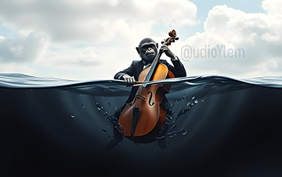

MUSIC FOCUS
Siamo un team versatile di produzione musicale e audio con una
vasta esperienza nella composizione e nella realizzazione di colonne
sonore per film, programmi TV e documentari. Il nostro lavoro spazia
da colonne sonore originali, personalizzate ad un'ampia gamma di media visivi e
narrativi

LO STUDIO
Supporto per registrazioni di alta qualità su
piccola scala, ideali per catturare le sfumature e il carattere di
voce, parlato, takeovers, chitarre acustiche ed elettriche pulite o texture
stratificate, strumenti a fiato (trombe, sassofoni, flauti e altri
elementi espressivi)

IL SOUND
Una tavolozza sonora versatile per i media visivi. La nostra
produzione musicale abbraccia un'ampia ed espressiva gamma di stili
sonori, accuratamente realizzati per supportare la narrazione in
tutte le sue forme. Lavoriamo su diversi generi

AUDIO TARGETS
Che si tratti di produzione musicale, post-produzione audio per
podcast, pubblicità, contenuti brandizzati o qualsiasi progetto
audio creativo, forniamo soluzioni on-demand di alta qualità con un
occhio attento ai dettagli e alla narrazione

INSTRUMENTS IN THE PLAY
Strumentazione ibrida/organica, che include pianoforte, archi,
chitarre, flauti, percussioni, field-textures e hooks di ispirazione
pop

VERSATILITA'
Colonne sonore ibride, che fondono elementi acustici e digitali per
creare sonorità uniche e immersive sia che il vostro progetto
richieda profondità cinematografica che una tensione minimalista

LA CRESCITA DEL TUO PROGETTO
Adattiamo le nostre composizioni al messaggio visivo. Il nostro approccio è adattabile, emotivamente
focalizzato e sempre in linea con il ritmo dell'immagine, o con la
tua prossima hit pop

SERVIZI
Offriamo capacità interne per piccole sessioni di registrazione e
forniamo servizi end-to-end tra cui editing, mixaggio e mastering

SKILL FACTORS
Motivi, melodie accattivanti, ritmi moderni e un sound design
accessibile per migliorare l'identità musicale o la chiarezza
narrativa, un'emozione acustica calda o un'energia pop brillante e
coinvolgente

MUSIC VISUALS
Musica d'atmosfera, ideale per sottolineare l'emozione, lo spazio e
la sottile tensione

ADVERTISING
C'è spazio per qualsiasi tipo di idea ed esigenza sonora, inclusi
jingle e audio dedicati e personalizzati

AMBIENT / AMBIENTS
Paesaggi sonori elettronici, synth profondi e strutturati, grooves,
tunes sperimentali e catture ambientali


{kind=link}